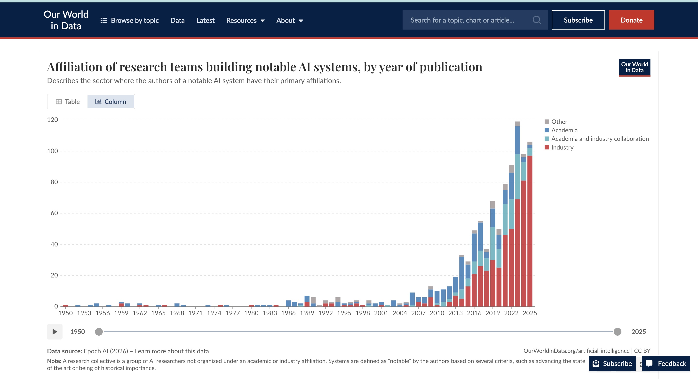
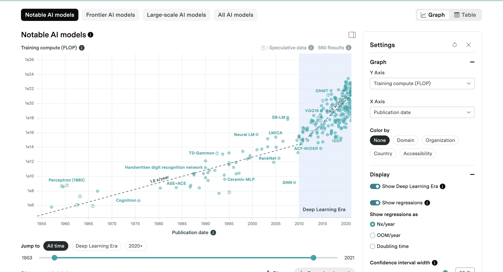

This exercise was aboout finding a data visualisation built by a master designer and reproduce it. Then reconstruct it using an alternative colour scale. I chose a stacked bar chart published by Our World in Data, tracing its underlying numbers back to Epoch AI, and rebuilt both versions in Python.
The Master Visualisation
The chart shows the annual number of notable AI systems published each year since 1950, broken down by the primary institutional affiliation of the research team Industry, Academia, a collaboration between the two, and Other.

The Primary Source
Our World in Data does not collect this data. This was originated from Epoch AI's own database of AI models, which classifies each system's authors by institutional affiliation. Percentage based rules (100% private sector authorship counts as "Industry", at least 30% from each sector counts as a collaboration).

Data Card
| Title | Affiliation of research teams building notable AI systems by year of publication |
|---|---|
| Summary | A stacked bar chart displaying the number of notable AI systems developed per year from 1950 to 2025. Categorized based on the institution of the respective research teams, Industry, Academia, Industry Academia collaboration and other. The chart shows that Academia was the huge part contributed to AI systems till the 20th century. |
| Data Sources |
Our World in Data. (2025, March 12). Affiliation of research teams building notable AI
systems by year of publication. Our World in Data. https://ourworldindata.org/grapher/affiliation-researchers-building-artificial-intelligence-systems-all Epoch AI. (2026, August). Data on AI models [Data set]. https://epoch.ai/data/ai-models?view=graph&tab=notable#explore-the-data |
| Mapping |
|
| Important Notes |
|
| Access |
Table: download directly from Our World in Data chart page https://ourworldindata.org/grapher/affiliation-researchers-building-artificial-intelligence-systems-all?tab=table CSV file: download the csv file used to create the visualization. (Our World in Data) https://ourworldindata.org/grapher/affiliation-researchers-building-artificial-intelligence-systems-all.zip?v=1&csvType=full&useColumnShortNames=false |
What I Did
I built both charts in Python using pandas and matplotlib. The data came as one row per category per year.The first step was pivoting it into a wide format with one column per affiliation category, which is what matplotlib actually needs to draw a stack. I also had to reindex the data against the full 1950–2025 calendar range, since 15 years had no recorded systems at all. Otherwise it would have been skipped rather than shown as empty.
For the reproduction, I matched the master's exact hexadecimal codes and its stacking order and checked my totals directly against the numbers shown in Our World in Data's own chart tooltip to confirm the underlying data matched exactly.
Reproduction (Original Colour Scale)

Reconstruction: Developing an Alternative Colour Scale
I developed a categorical color scale because the chart shows four types of affiliations instead of showing the values in an increasing order. Dark blue is used for Industry as it is the most significant category over the past few years. The affiliation that combines Academia and Industry uses green as it can be easily identified from the two sectors. Orange was chosen for Academia, and a purple color shows other affiliations.

References
- Epoch AI. (2026, August). Data on AI models[Data set].
https://epoch.ai/data/ai-models?view=graph&tab=notable - Our World in Data (2025, March 12). Affiliation of research teams building notable AI
systems by year of publication. Our World in Data.
https://ourworldindata.org/grapher/affiliation-researchers-building-artificial-intelligence-systems-all